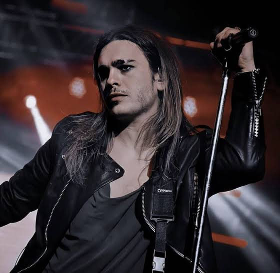
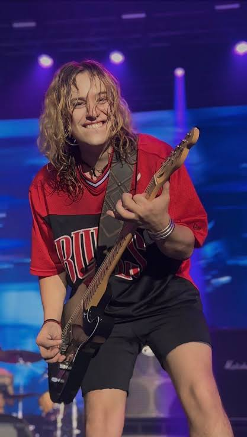

Biografía
Airbag es una banda de rock argentina integrada por los hermanos Patricio, Guido y Gastón Sardelli, originarios de Don Torcuato, provincia de Buenos Aires. Se formaron en 1999 bajo el nombre Los Nietos de Chuck, en homenaje a Chuck Berry, ya que en sus comienzos tocaban covers de artistas clásicos como The Beatles, Creedence Clearwater Revival y el propio Chuck Berry. Más adelante, al comenzar a componer sus propias canciones, adoptaron el nombre Airbag, por su sonoridad universal y su fácil recordación. Luego de varios shows en vivo, uno de sus demos llegó a Warner Music, lo que les permitió grabar su primer álbum.
Su disco debut, Airbag (2004), fue grabado en los estudios ION y contiene doce canciones, mayormente compuestas por Patricio Sardelli. El primer corte de difusión, "La partida de la gitana (Si te vas)", los posicionó dentro de la escena del rock nacional. El éxito del álbum les permitió realizar giras por todo el país y participar en programas televisivos masivos, ampliando rápidamente su base de fans.
A lo largo de su carrera, Airbag mostró una evolución musical constante. Discos como Una hora a Tokyo (2008), Libertad (2013), Mentira la verdad (2016) y Al parecer todo ha sido una trampa (2021), marcaron su desarrollo hacia un sonido más complejo y maduro, incorporando influencias del rock sinfónico, hard rock, metal y elementos orquestales. Sus letras abordan tanto temáticas personales como sociales, y han sido reconocidos por su virtuosismo instrumental, especialmente en la guitarra y la batería.
Además de su éxito discográfico, la banda ha recibido múltiples premios y nominaciones, entre ellos varios Premios Gardel. Se han presentado en los escenarios más importantes de Argentina, como el Luna Park y el Movistar Arena, y han llevado su música a festivales en América Latina. En 2024, fueron teloneros de Guns N' Roses durante su gira por Sudamérica y participaron en festivales internacionales como Rock in Rio y Cosquín Rock. Airbag es hoy una de las bandas más respetadas del rock argentino contemporáneo, con una identidad sólida, una base de seguidores leal y una proyección internacional en crecimiento.
Gastón Faustino Sardelli
Nació el 18 de abril de 1982 en Don Torcuato, Gastón es el bajista y corista de Airbag. Antes de formar la banda con sus hermanos, tuvo una banda con amigos que ensayaba en su casa, lo que permitió a Patricio y Guido familiarizarse con los instrumentos. Estudió cuatro años de bioingeniería antes de dedicarse por completo a la música. Fuera del ámbito musical, Gastón es activista por los derechos de los animales y el medio ambiente, participando en campañas a favor del vegetarianismo y en contra del maltrato animal.

Patricio Máximo Sardelli
Nació el 26 de enero de 1986 en Don Torcuato, Buenos Aires, Patricio es el vocalista principal, guitarrista y tecladista de Airbag. Desde niño, mostró inclinación por la música, influenciado por su abuela, quien le enseñó a cantar tangos. Participó en programas de televisión como "Grandes Valores" y "Hola Susana", donde interpretaba tangos. Además de ser la voz principal y el frontman de la banda, es autor de muchas de las canciones que se convirtieron en éxitos con el paso del tiempo.
Guido Armido Sardelli
Nació el 5 de diciembre de 1988 en Don Torcuato. Es multiinstrumentista: comenzó como baterista de Airbag, pero con el tiempo asumió roles de guitarrista y vocalista en presentaciones en vivo. En el estudio, continúa grabando las pistas de batería. Entre sus influencias musicales se encuentran The Beatles, Bon Jovi, Rata Blanca y Green Day. Guido también ha mostrado interés por la música clásica, participando en conciertos sinfónicos que fusionan rock y música clásica.
